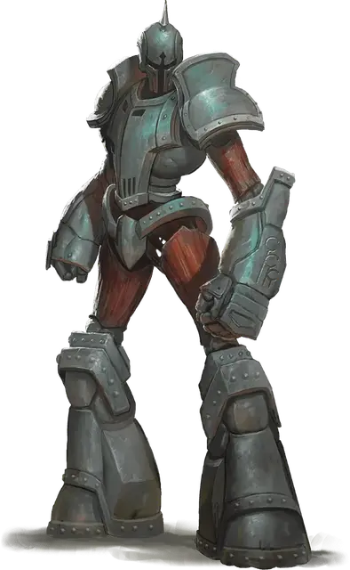

Щитостраж
Shield Guardian
Большой Конструкт, без мировоззрения

Класс Доспеха 17 (природный доспех)
Хиты 142 (15к10 + 60)
Скорость 30 футов
| мод | спас | ||
|---|---|---|---|
| СИЛ | 18 | +4 | +4 |
| ЛОВ | 8 | −1 | −1 |
| ТЕЛ | 18 | +4 | +4 |
| мод | спас | ||
|---|---|---|---|
| ИНТ | 7 | −2 | −2 |
| МДР | 10 | +0 | +0 |
| ХАР | 3 | −4 | −4 |
Иммунитет к урону яд
Иммунитет к состояниям паралич, очарование, отравление, истощение, испуг
Чувства слепое зрение 10 футов, тёмное зрение 60 футов, пассивное Восприятие 10
Языки понимает команды, отданные на любом языке, но не говорит
Опасность 7 (2900 опыта)
Бонус мастерства +3
Среда обитания Город
Особенности
Привязка. Щитостраж магическим образом привязан к амулету. Если щитостраж и амулет находятся на одном плане существования, владелец амулета может телепатически позвать щитостража к себе, и щитостраж знает направление и расстояние до амулета. Если щитостраж находится в пределах 60 футов от владельца амулета, половина урона, получаемая владельцем (округляя в большую сторону), переносится на щитостража.
Регенерация. Щитостраж восстанавливает 10 хитов в начале своего хода, если у него есть хотя бы 1 хит.
Хранение заклинаний. Заклинатель, носящий амулет щитостража, может заставить щитостража хранить одно заклинание с уровнем не выше 4-го. Для этого владелец должен наложить заклинание на щитостража. Заклинание не производит эффект, а сохраняется в нем. Когда владелец прикажет, или возникнет ситуация, определенная заклинателем заранее, щитостраж накладывает хранящееся заклинание со всеми параметрами, заданными исходным заклинателем, безо всяких компонентов. Когда заклинание накладывается или поступает для хранения новое заклинание, предыдущее заклинание теряется.
Действия
Мультиатака. Щитостраж совершает две атаки кулаком.
Кулак. Рукопашная атака оружием: +7 к попаданию, досягаемость 5 футов, одна цель. Попадание: Дробящий урон 11 (2к6 + 4).
Реакции
Щит. Если некое существо совершает атаку по владельцу амулета, щитостраж дарует бонус +2 к КД владельца, если они находятся в пределах 5 футов друг от друга.
Описание
Волшебники и другие заклинатели создают щитостражей для своей защиты. Щитостражи держатся рядом со своим хозяином, поглощая урон, чтобы создатель оставался в живых как можно дольше.
Амулет хозяина. Для каждого щитостража есть амулет, с которым он магическим образом связан. Такой амулет всегда только один, и если он будет уничтожен, щитостраж станет недееспособным, пока амулет не будет заменен на исправный. Амулет щитостражей является самостоятельной целью для атаки, если его никто не несет и не носит. КД амулета равен 10, у него 10 хитов, и он имеет иммунитет к урону психической энергией и ядом. Создание нового амулета занимает одну неделю и стоит 1000 золота за компоненты.
Главная задача щитостражей — защищать носителя амулета. Владелец амулета может приказывать щитостражу атаковать противников или защищать себя от атак. Если носитель амулета находится в опасности, то конструкция щитостража поглотит часть урона, даже на некотором расстоянии.
Заклинатель может хранить одно заклинание внутри щитостража, который может использовать это заклинание по команде или других условиях. Многие волшебники попадали в руки врага, но были спасены щитостражами, обрушившими на врагов могущественные силы.
Великолепное сокровище. Благодаря тому, что амулет щитостража можно передать другому существу, некоторые волшебники собирают огромные суммы денег с принцев, знатных особ, а также глав криминальных группировок на получение амулета. При этом щитостраж представляет огромную ценность для того, кто сможет убить владельца амулета и забрать его себе.
Природа конструкта. Щитостражу не нужен воздух, еда, питье и сон.